- TOP
- ce-fit（セフィット）とは？
BRAND CONCEPTce-fit（セフィット）
シリーズの特長・魅力
多彩なパーツを組み合わせ、さまざまな暮らし方にフィットした収納スタイルを実現できるのが、
「ce-fit（セフィット）」シリーズ。
可変性をもたせることで将来の暮らしの変化にも対応できるよう、
本体購入から何年経過してもパーツの移動・追加注文が可能な点も、
健康や安全に配慮した厳選部材を用い、国内の自社工場でていねいに製造する安心感も魅力です。
こちらでは、アクシス株式会社がご提供しているce-fit（セフィット）シリーズの魅力についてご説明します。
4つの製品を合わせて
ce-fit（セフィット）です
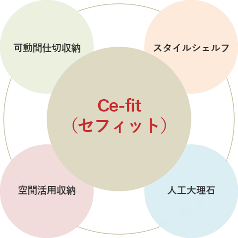
たとえば、暮らしやライフスタイルの変化に合わせ、間取りやインテリアをフレキシブルに変えることができたら──。多くの方のこうした想いに応えるのが、お部屋にぴったり合うようミリ単位で採寸、制作するオーダーメイドスタイルのオリジナルファニチャー「可動間仕切収納」を代表とする、「ce-fit（セフィット）」シリーズです。
ce-fit（セフィット）シリーズは「可動間仕切収納」「スタイルシェルフ」「空間活用収納」「人工大理石カウンター」と4種類のラインナップがあり、アクシスはこれらを組み合わせてお客様の理想をカタチにしています。
安心・安全や環境配慮にこだわった
材料調達・選定
原料調達から製造、流通、使用、廃棄までライフサイクルを通じて、製品の安全性にこだわったのがce-fit（セフィット）シリーズです。
パーティクルボード・MDFの活用
リサイクル原料を積極採用。
木をムダにしない
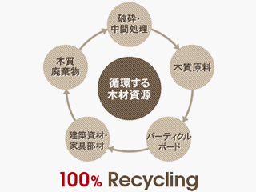
ce-fit（セフィット）シリーズの製造ではリサイクル原料を積極的に使用しています。たとえば、製材時の端材や小径の間伐材、木質廃棄物などを細かく切削したチップに接着材を塗布して成形したパーティクルボードはその一つ。また。木材から繊維を分離し、接着剤と混合して成型したMDF（medium density fiberboard＝中密度繊維板）も採用しています。森林資源を枯渇から守り、地球環境を保全するためにも、アクシスはこうしたエコ配慮型木質資源の利用を推進しています。
F☆☆☆☆対応・4VOC対策
健康に配慮し、安全な材料を厳選
ce-fit（セフィット）シリーズ各製品では、使用面積制限規制の対象外となっているホルムアルデヒド発散蒸散量がもっとも少ない「F☆☆☆☆グレード」の材料を使用しています。さらに、シックハウス症の主な原因物質として新たに規制対象となった特定揮発性有機化合物＝4VOC（トルエン・キシレン・エチルベンゼン・スチレン）についても木質建材業界自主基準値に適合した材料への切り替えを推進。また、出荷日・邸名・品名から構成材料を追跡できる品質管理体制を整えています。
製品の表面仕上げには、人大に有害な物質を含まない「水性塗料」を主に使用しています。
純国産化を目指して
国産材+国内生産でさらなる安心を追求
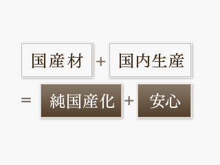
日本国内で産出する木材を原料として国内の工場で加工・製造することができれば、品質面はもちろん安全面についてもきわめて理想的です。
アクシスでは、主な材料の一つであるパーティクルボードの国産品切り替えをすでに終えており、MDFについても他に先駆けて2010年9月から調達先を国内メーカーに順次切り替えています。当初、全購入量の80％を国産材としたMDFですが、将来的には100％純国産に移行する予定です。
なお、製造についても、兵庫県内にある自社工場でce-fit（セフィット）シリーズの全製品について完全受注生産体制を確立しています。
※一部スライド蝶番（ちょうつがい）やノックダウン金物など、高品質な輸入資材を採用しています。
独自開発の水性塗料ダイレクト塗層化粧ボード
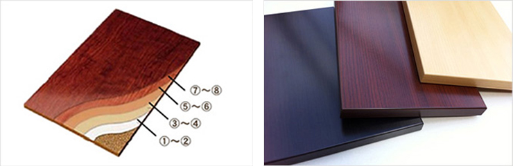 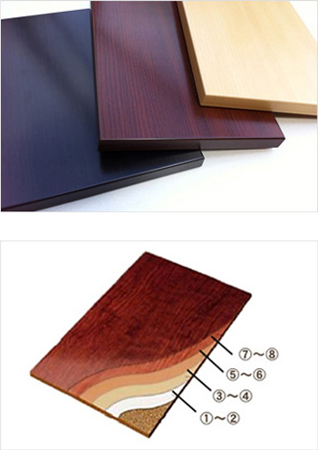
| ①フィラー（下地処理） | 水性フィラー（アクリル系） |
|---|---|
| ②サンディング（研磨） | ── |
| ③ベースコート（隠蔽・下地色） | 水性ベースコート（アクリル系） |
| ④ベースコート（隠蔽・下地色） | 水性ベースコート（アクリル系） |
| ⑤ベースコート（隠蔽・下地色） | 水性ベースコート（アクリル系） |
| ⑥プリント（柄付け） | 水性プリントインク（アクリル系） |
| ⑦プリント（柄付け） | 水性プリントインク（アクリル系） |
| ⑧トップコート（表層） | アクリル系UV塗料 |
| ⑨トップコート（表層） | アクリル系UV塗料 |
| ⑩エンボス（グロスマット） | アクリル系UV塗料 |
| ⑪トップコート（表層） | アクリル系UV塗料 |
石油加工品使用量を削減して脱VOCを実現
家具などの表面仕上げではメラミンやポリエステル、コート紙、樹脂化粧シートなど石油由来の加工品が使用されるケースが一般的。これにより生産性は向上するものの、VOC（揮発性有機化合物）を溶剤として多用しているため、シックハウス症を引き起こす主要因となっています。
ce-fit（セフィット）シリーズでは水性塗料を用いるダイレクト印刷技術を採用し、安全な製品づくりにいち早く取り組んできました。この技術から生産される「ダイレクト塗層化粧ボード」ではVOCを含まない水性塗料で目止め・ベースコート・柄印刷を施し、さらにアクリル系UV塗料を紫外線硬化させトップコートとすることで、安全性と表面強度向上、表情のある仕上がりを実現しました。これがオーリスグループオリジナルの“人にやさしく、強く、美しい”化粧ボードです。なお、弊社では自社生産の利点を生かし、オリジナル色の小ロット生産にも対応しています。
ムダがない部分設計や製造工程
省資源、施工性の向上、安全性などに配慮したce-fit（セフィット）シリーズ。徹底してムダを排した設計や製造工程がアクシスのこだわりです。
フラッシュパネルの活用
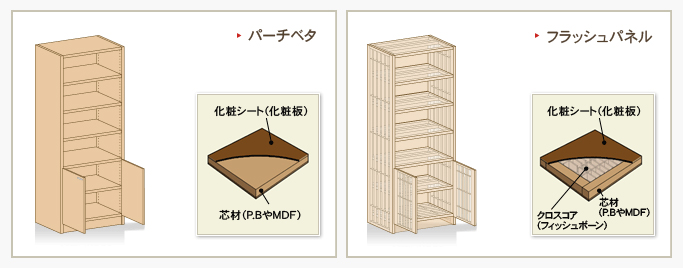
省資源で“強く、軽く、重厚な”製品を可能にするフラッシュパネル
安価な家具や内装建材の多くは、パーティクルボードの両面を化粧した「パーチベタ」と呼ばれるものでできています。用途などに応じてカットすればよいので生産効率が高く、木質材料を高密度に圧縮してつくられているので丈夫そうな印象もありますが、その分重量があり、大きな棚板では自重でたわむことも。さらに、取り回しを考えて比較的薄い板材が使われることも多く、その分枚数も増えるため、配送や搬入に多くの労力を必要とします。
ce-fit（セフィット）シリーズではこうした欠点を持つパーチベタを使わず、重厚な外観でありながら軽量で、剛性と反りへの強さを兼ね備えた独自のフラッシュパネルを採用しています。パーチベタで同サイズの家具をつくったと仮定すると、フラッシュパネルでは木質材料の使用量を半分以下に抑えることができます。
クロスコア
端材を捨てずに使い切る技術
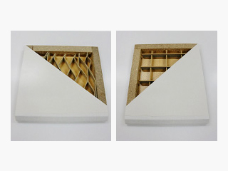
貴重な森林資源を守るために「廃棄物ゼロ」を目指すアクシスでは、端材を捨てずに“生かす”技術を開発してきました。その一つがクロスコアと呼ばれるもの。通常、火力発電所で燃料として利用されることの多い化粧MDF の端材を組子にし、フラッシュパネルの補強に使われるペーパーハニカムと置き換えることで、廃棄物ゼロを可能にしました。
また、強度がペーパーハニカムより高くなるだけでなく、反りにも強くなるといった特性があります。端材とはいえ、元は貴重な森林資源。そのすべてを使い切る技術は、環境保全への大きな推進力になるでしょう。
ジョイントコア
小割材をエンドレスにつないで端材ゼロに
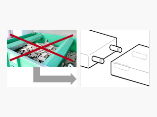
従来、家具製造の現場では大量の端材が発生していました。とくにフラッシュパネルの芯材（フレーム材）に使用するパーティクルボードは、6尺や8尺などの定尺材をカットしていたためどうしても細かい端切れが出てしまいます。
そこで、ce-fit（セフィット）シリーズの製造現場ではこの工程を根本から見直すことにしました。とはいえ、端切れをゼロにすることは困難。アクシスではパーティクルボードの切り残し（＝小割材）を「ダボ」で連結し、ジョイントコアとすることで材料の大幅なムダを削減しています。ちなみに、2008年には前年度比で端材発生の70％削減に成功。2010年9月からは扉生産ラインにジョイントコア・クロスコア自動ラインを導入し、一層の廃棄物削減に取り組んでいます。
使いやすさを考えた商品設計
ミリ単位のオーダーメイド
お部屋に合わせて家具をぴったりとサイジング
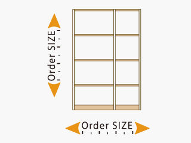
ce-fit（セフィット）シリーズは、平面図や採寸の結果に基づいてお部屋にぴったり合うよう幅と高さをミリ単位で採寸するオーダーメイドスタイルを採用しています。こうすることで現場での切断作業が不要になるため、組立から据付といった一連の作業がスピーディーに行え、なおかつ施工中のゴミ、ホコリの発生も最小限に抑えることができます。従来のリフォームでは考えられない手軽さで希望の間取りや空間を実現できるのが、ce-fit（セフィット）シリーズの魅力と言えるでしょう。
金物の使用順に連包された
「ブロックパック」
画期的な段取りにより短時間での組立が可能に
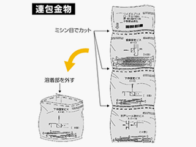
ce-fit（セフィット）シリーズの施工は、現場組立（ノックダウン方式）を基本としています。完成品を持ち込めば現場での作業はシンプルになりますが、サイズが大きいと輸送コストが上がり、搬入も難しくなりがち。そこで、アクシスでは組立をより簡易なものとするために「ブロックパック」を自社開発しました。
ブロックパックは、施工に必要な部品、部材を複数の袋に分けて入れ、それぞれの袋を作業の順番通りに連結させるというもの。これなら、部品点数の多い製品の組立も段取りよく行うことができます。また、側板セットや天地板セットなど部材梱包には開梱順を明記し、パーツが途中で足りなくなったなど作業ロスやミスの削減に貢献しています。
突っ張り固定と後付けシステム
壁や床へのビス止めが不要で取付も調整も簡単、移動しても痕が残らない
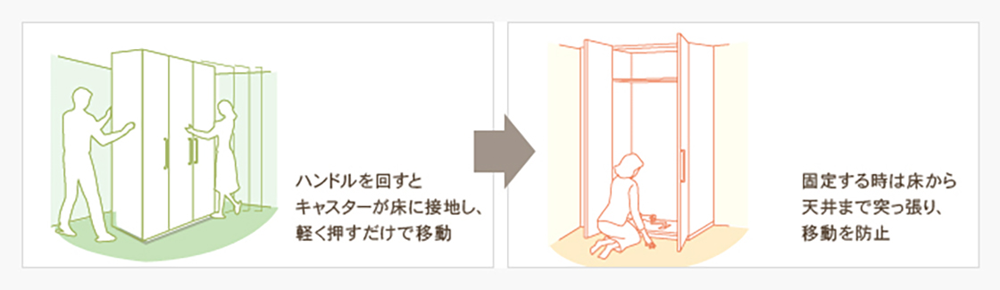
多くの場合、システム収納は住宅の設計段階からプランニングしておくもの。そうでないと取付が難しくなったり、設置できても隙間が生まれて見苦しくなったりしかねません。そういった状況では、新居に対する満足度も低くなってしまいます。
アクシスでは、暮らしの変化に応じて追加や変更が可能な商品を開発し続けています。その代表作が「可動間仕切収納」。壁や床へのビス止め不要で、取付はもちろん移動や調整も簡単に行えるため、家族構成やライフスタイルが変わってもすぐにレイアウト変更が可能です。また、これは小さなことかもしれませんが、ミリサイズオーダーで空間に合わせぴったりにつくる収納家具だけに、移動しても床面や壁面にビス痕が残らずきれいなままです。
ハンドルを回すとキャスターが床に設置し、軽く押すだけで移動
固定する際は床から天井まで突っ張るので、しっかり固定できます。意図せず、動いてしまうことを防止できます。
収納パーツの移動や追加・組み換えが簡単
樹脂製のインサートナット採用で施工性・メンテナンス性が向上
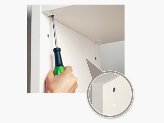
現場での効率的な施工を可能にするために、ce-fit（セフィット）シリーズでは樹脂製のインサートナットを棚板やハンガーパイプを固定するための取付穴に用いています。ドライバー1本で簡単にしかもしっかりと埋め込むことができ、確実にパーツを固定できる十分な強度も確保できます。しかも樹脂製であることから、取付位置の移動や追加も容易。金属製ナットのように取付穴が広がって再利用ができなくなる、内部が錆などで汚れるといったこともありません。
追加パーツ受注システム
受注データの邸別永久管理でお客様に応える
アクシスでのce-fit（セフィット）シリーズ製品の追加パーツ交換について、ご購入後も無期限で対応するために、ご注文邸名と商品をひも付けして受注データとして永久保存しています。なお、当社では購入日・邸名・品名から出荷時の寸法や仕様、構成材料を照合できる品質管理体制を整えているので、何年経ってもスムーズなメンテナンスをご提供できます。
また、このデータを活用することで、ご注文いただいた工務店様・ハウスメーカー様はもちろん、一般のお客様や賃貸住宅の管理会社様からの直接注文にも対応する「追加パーツ受注システム」を可能にしています。